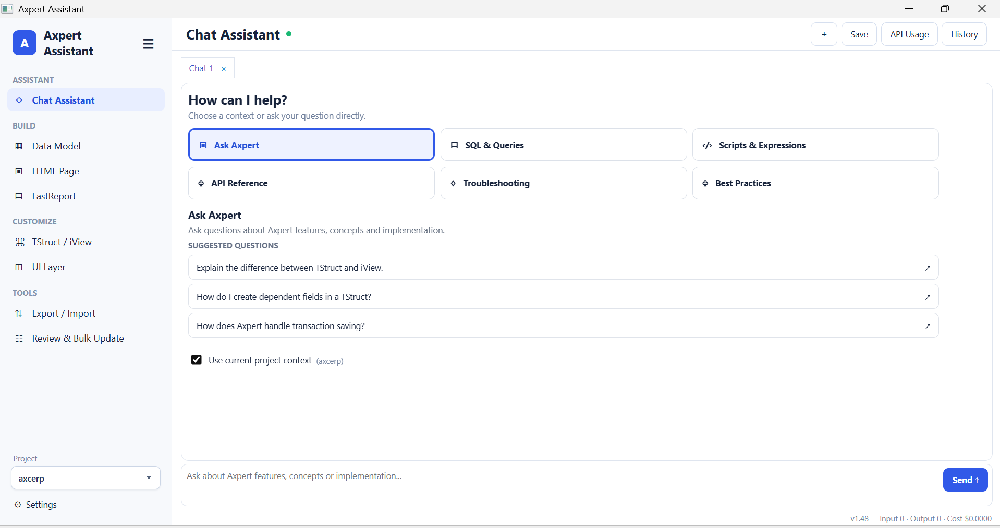
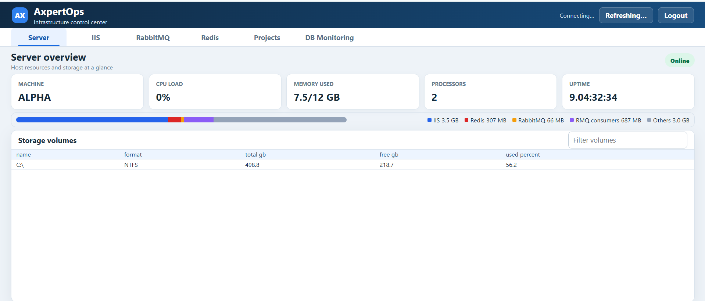

Axpert AssistantDevelop and modernize
AXPERT DEVOPS SUITE
Build with intelligence.
Operate with confidence.
Bring AI-assisted Axpert development and live operational control into one practical suite, grounded in your projects, infrastructure, and deployment standards.
- Project-aware
- Security-conscious
- Deployment-ready
AxpertOpsObserve and control
AXPERTDEVOPSchange to uptime
ONE CONTINUOUS VIEW
From a requested change to a healthy running environment
Axpert Assistant helps teams create, review, and package supported project changes. AxpertOps helps them understand and manage the infrastructure and databases those changes depend on.
RequestUnderstandBuildReviewDeployOperate
01 / BUILD
Axpert Assistant
A focused Windows desktop experience backed by private hosted skills and project-aware local execution.

Guided Axpert workflows
Purpose-built intake for UI layers, TStructs, iViews, custom pages, FastReports, API documentation, definition review, and imports.
Project-aware evidence
Understands the mapped AxpertWeb workspace, provider, metadata, and supported extension points before acting.
Controlled local actions
Constrained workspace access and transactional, allow-listed database changes for supported development workflows.
Reviewable delivery
Creates validated definitions, deployment-ready assets, timestamped patches, and clear manifests.
HOW IT WORKS
- Select the project and workflow.The desktop discovers configured Axpert projects and opens a purpose-built intake instead of a generic prompt.
- Collect authoritative local context.Supported files, structure metadata, provider information, and existing overrides are gathered before generation.
- Generate through private product skills.The agent applies Axpert-specific rules and requests only the narrowly scoped local tools required by the workflow.
- Validate, execute, and package.The desktop enforces access policies, verifies outputs, performs approved local actions, and creates reviewable deployment artifacts.
02 / OPERATE
AxpertOps
An authenticated control center for the infrastructure and databases that keep Axpert applications running.
SERVER OVERVIEW
Host resources at a glance
CPU, memory, uptime, processors, storage volumes, and memory composition across core services.

Resource and storage visibility with service-level memory composition.
Topology, pools, worker processes, active requests, recycle settings, and controlled actions.
Cluster health, queues, consumers, users, virtual hosts, and permissions.
Discovery, health, memory, clients, persistence, authentication, and service actions.
Axpert project, schema, database instance, IIS mapping, and configuration discovery.
Oracle and PostgreSQL activity, SQL, jobs, schemas, administration, and read-only queries.
HOW IT WORKS
Discover, connect, observe, and act
Read server resources, exported IIS topology, configured brokers and caches, and Axpert project metadata.
Use server-side credentials and explicit database sessions without returning secrets to the browser.
Bring health, activity, capacity, mappings, and configuration warnings into a consistent operational view.
Expose authenticated, deliberate controls for approved IIS, RabbitMQ, Redis, and database operations.
03 / TOGETHER
A stronger operating model for Axpert teams
The suite connects development context with operational reality without pretending they are the same job.
Faster, more consistent delivery
Reusable product knowledge and guided workflows reduce rediscovery and produce predictable review artifacts.
Clearer technical governance
Supported paths, scoped actions, local validation, and visible deployment packages keep changes explainable.
Better incident context
See Axpert projects alongside the services, application pools, message brokers, caches, and databases they use.
PRACTICAL BENEFITS
What changes for the team
- Less rediscovery
- Project metadata, implementation rules, and infrastructure context are collected consistently.
- Safer execution
- Workspace boundaries, allow-listed operations, transactional changes, and authentication constrain actions.
- Faster diagnosis
- Application, service, cache, broker, and database signals can be examined without switching across unrelated tools.
- Cleaner handover
- Validated outputs, patch manifests, and visible operational state improve review and deployment conversations.
DEPLOYMENT PRINCIPLE
Private by design. Practical by deployment.
Run the agent service behind trusted infrastructure and deploy AxpertOps on an internal network or VPN with HTTPS, dedicated service identities, protected application data, and least-privilege access.
START WITH THE ENVIRONMENT
Plan a focused technical review
Confirm the target Axpert environments, database providers, hosting topology, security controls, user scope, trial plan, and rollout ownership.
Contact Axcord